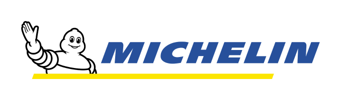
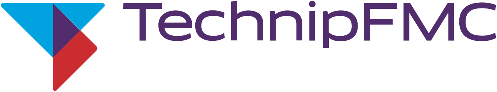

Steven Dyer
Mechatronics Engineering Student
I am a senior mechatronics engineering student attending Memorial University of Newfoundland, expecting to graduate in May 2028. I have a strong interest in robotics, electronics, and embedded software/firmware development. I develop electronics and firmware for various student projects, personal projects, and through my professional work.
About Me
Bachelor of Enigneering - Mechatronics Engineering
GPA: 3.8/4.0
- Co-founder & Low Voltage Lead for Formula MUN
- Software Team Lead for Paradigm Engineering
- Former Firmware Developer for Memorial Baja
- Host of MUN's Socratica node, make @ mun
- Class Representative for MUN Mechatronics Class of 2028
- PEGNL Engineering Scholarship
- Ray Bonia Memorial Scholarship
- Cori Brown Memorial Award
- Top 1% of Dave Matthews Band Listeners
Experience
Mount Pearl, NL · May - Aug 2026
Kraken Robotics develops advanced sensors, batteries, and robotic systems for Unmanned Underwater Vehicles. They are recognized as world leading innovators of Synthetic Aperture Sonar (SAS). As an embedded engineering intern, my work included:
- Developed C++ firmware for new product PCBs, enabling automated hardware validation during bring-up and accelerating SeaPower Batteries qualification timeline.
- Wrote drivers for ARM Cortex-M microcontrollers communicating over I2C, SPI, RS-485, and Ethernet, validated against hardware during iterative board spins.
- Designed PCBs for communicating with a new SAS unit through multiple interfaces, including I2C, UART, SPI, RS-485, and Ethernet, as well as PCBs for system testing during production.
- Wrote Python tooling to automate validation processes of incoming PCBs.
- Tested PCBs using oscilloscopes, logic analyzers, and multimeters.
St. John's, NL · Apr 2026 - Present
Formula MUN is Memorial University of Newfoundland's FSAE Electric team, designing and building a signle-seat electric formula car for the Formula SAE competition. As the co-founder and low voltage lead, I own the vehicle's control electronics, network architecture, and safety systems:
- Architected the vehicle's dual-CAN network, separating latency-sensitive powertrain traffic at 500 kbit/s from chassis messaging at 250 kbit/s, both controlled by an ARM Cortex-M7 microcontroller.
- Desgined a PCB to successfully shutoff the high voltage battery when demanding simultaneous hard throttle and braking, as well as architecting PCBs for power regulation and communication to other electronic components.
- Co-founded Memorial University's first FSAE Electric team and led its low voltage team, establishing the electrical design and firmware development process, as well as their review structure.
St. John's, NL · Oct 2023 - Present
Paradigm Engineering is the largest design and competition team at Memorial University of Newfoundland. The team has competed at the SpaceX Hyperloop Pod competition, The Boring Company's 'Not-a-Boring' competition, the Intelligent Ground Vehicle competition, and the Autonomous Karting Series. Paradigm is gearing up to return to the Autonomous Karting Series in 2027, creating a fully autonomous, self-driving go-kart:
- Wrote all firmware, including low-level drivers for CAN, UART, and PWM, using C on an ARM Cortex-M4 microcontroller to facilitate communication between a Jetson Orin, a Pixhawk 6C, and several motors.
- Developed a computer vision system using a ZED 2i Stereo Camera and PyTorch, implementing a CNN to detect white lines on the race track, enabling autonomous navigation and waypoint correction.
- Designed the software architecture of an autonomous go-kart which achieved second place at the 2025 Autonomous Karting Series National Grand Prix.
- Led and mentored the software team by preparing onboarding resources, documentation, and task assignments, resulting in significant contributions and experience gain by 10+ members.

Waterville, NS · Jan - Apr 2025, Sept - Dec 2025
Michelin is a global leader in the automotive industry and tire manufacturing. As an automation engineering intern, I worked with the Innovation team on implementing new technologies into the tire manufacturing process. My work included:
- Developed C firmware for a new standards training lab on an ESP32 microcontroller, including I2C and UART drivers for proximity and barometric pressure sensors.
- Led a team of four technicians to install a new energy monitoring device by drafting all necessary electrical schematics and writing PLC ladder logic, resulting in improved energy trend tracking.
- Fine-tuned a Gocator 3D sensor via built-in emulation software, enhancing the automated quality inspection system and improving dimensional measurement accuracy by 60%.
- Designed and proposed a closed-loop control system to enhance temperature regulation for a tire membrane test bed’s heating element, including the full schematic design in DraftSight.
St. John's, NL · Sept 2023 - Apr 2026
Memorial Baja is a student design team building a single-seat off-road Baja SAE racing vehicle. As a firmware developer, I contribute to the development of all firmware for the electronic systems on the vehicle:
- Developed C firmware for an ESP32 microcontroller to measure the drive shaft RPM from hall effect sensor data and establish communication to a digital dashboard via BLE to display RPM.
- Tested and troubleshooted the hall effect sensor using multimeters and oscilloscopes ensuring accurate sensor readings.

St. John's, NL · May - Aug 2024
TechnipFMC is a global energy company that provides technologies, project management, and engineering services to the oil, gas, and broader energy industry. As a project engineering intern, I worked with the Project Engineering department assisting in the execution of large-scale subsea projects. My work included:
- Managed master equipment certification folder using Excel to streamline data retrieval for audits and inspections.
- Conducted site inspections to monitor subsea project progress and ensure compliance with quality standards.
- Performed calculations on a reel lift rigging assembly using knowledge of statics to ensure the assembly can tolerate expected loads.